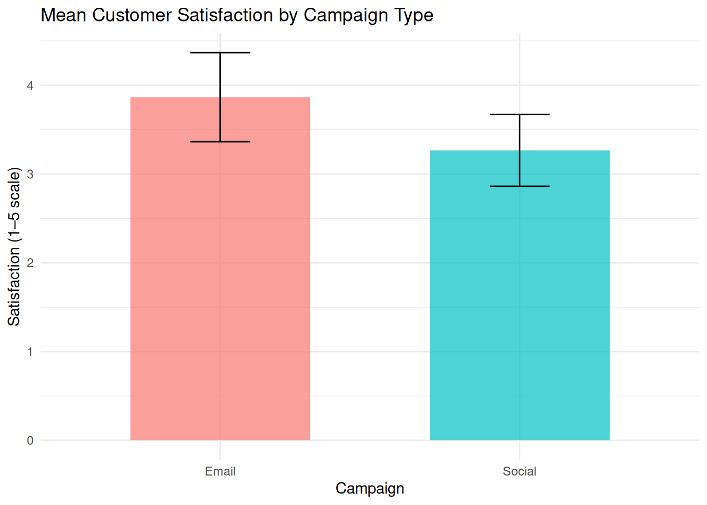
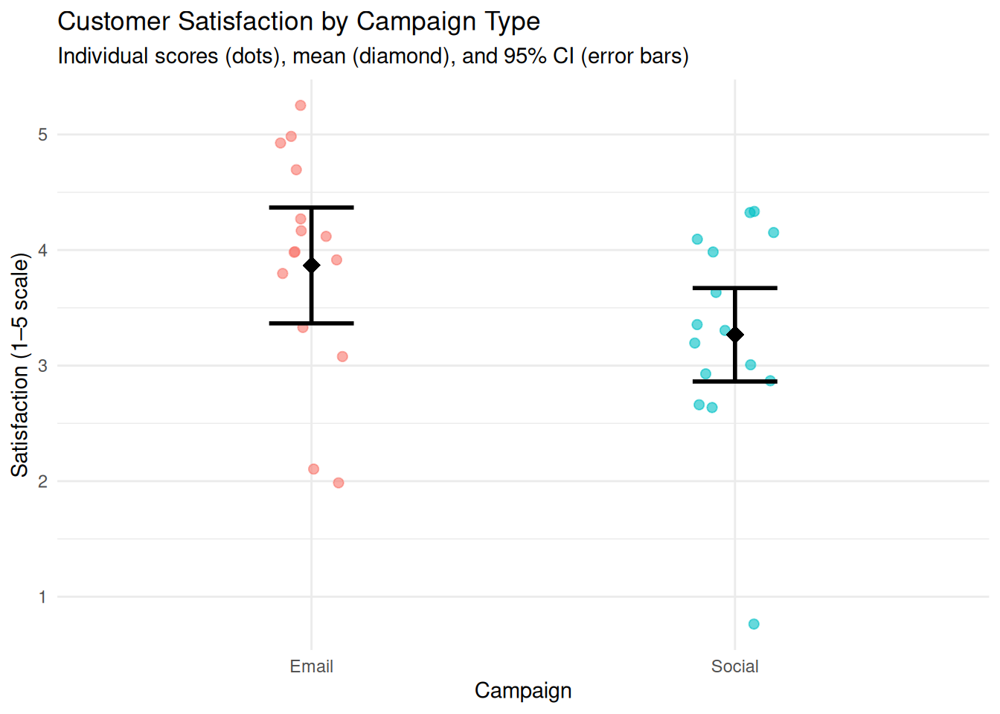
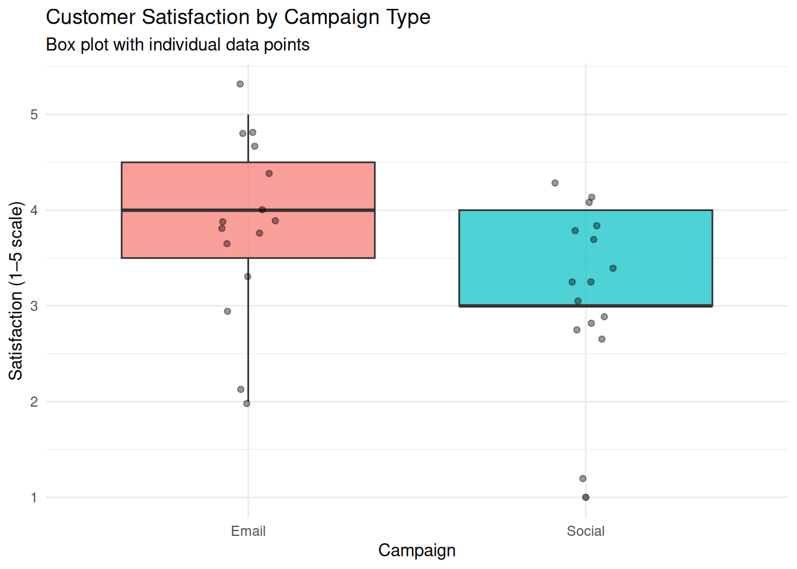
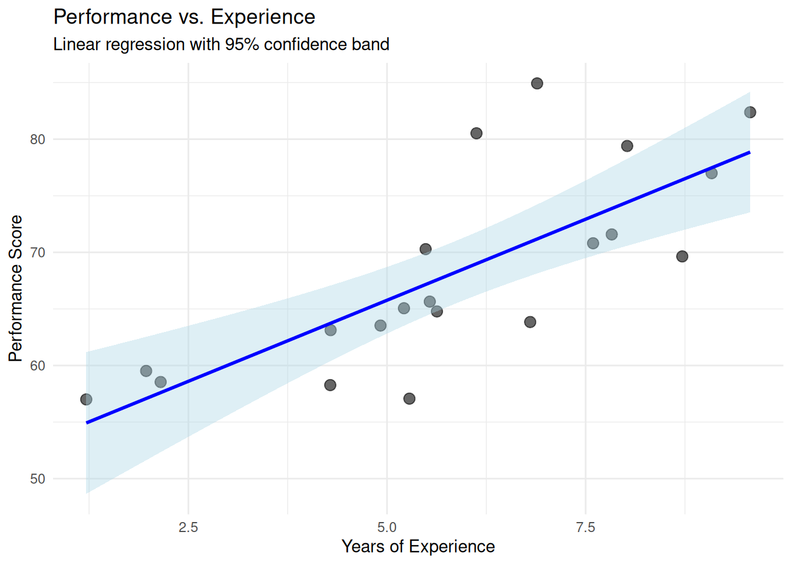
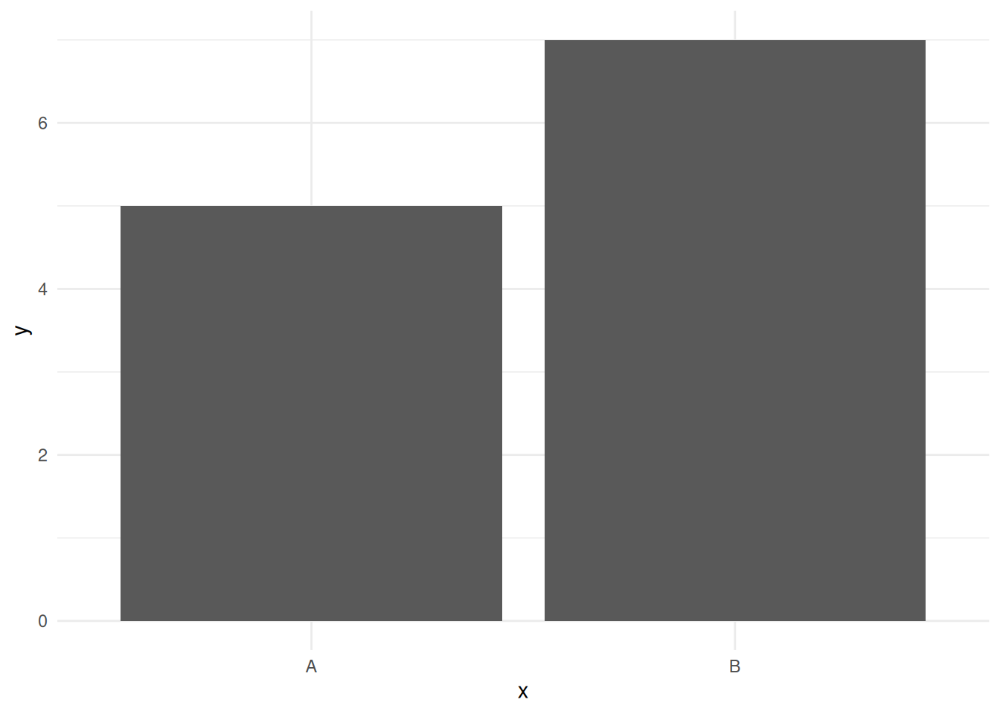

| Domain-Specific Effect Size Benchmarks | ||||
| Research Domain | Small | Medium | Large | Source |
|---|---|---|---|---|
| Psychological interventions | d = 0.2 | d = 0.5 | d = 0.8 | Lipsey & Wilson (1993) [@lipsey1993] |
| Educational interventions | d = 0.1 | d = 0.3 | d = 0.6 | Kraft (2020) [@kraft2020] |
| Medical treatments | OR = 1.2 | OR = 2.0 | OR = 4.0 | Chen et al. (2010) [CITATION NEEDED] |
| Customer satisfaction | d = 0.2 | d = 0.5 | d = 0.8 | Industry standards |
| Process improvements | 5% change | 10-20% change | >25% change | Domain-specific |
4 Part D: Reporting and Interpretation
This part addresses how to communicate findings from small-sample studies transparently and responsibly. We cover effect sizes and confidence intervals, transparent reporting of methods and limitations, interpreting non-significant results, presenting uncertainty visually, and documenting analytic choices.
4.1 Chapter 13. Effect Sizes and Confidence Intervals over P-Values
4.1.1 Learning Objectives
By the end of this chapter, you will be able to:
Conceptual Understanding - ✓ Explain why p-values are insufficient for inference with small samples - ✓ Understand the relationship between effect sizes, power, and sample size - ✓ Recognize that p > 0.05 does not mean “no effect” in underpowered studies - ✓ Distinguish statistical significance from practical importance
Practical Skills - ✓ Compute standardized effect sizes (Cohen’s d, r, η²) in R - ✓ Calculate confidence intervals for effect sizes using effectsize package - ✓ Interpret confidence intervals for magnitude and precision - ✓ Report effect sizes in APA format with appropriate decimal places
Critical Evaluation - ✓ Assess the variability of p-values across replications with small n - ✓ Evaluate whether observed effects are practically meaningful - ✓ Critique studies that report p-values without effect sizes
Application - ✓ Emphasize effect size estimation over hypothesis testing in reports - ✓ Use confidence intervals to communicate uncertainty transparently - ✓ Design studies to estimate effect sizes with adequate precision
- Cohen’s d: Difference in means divided by pooled standard deviation (for t-tests and similar comparisons).
- Odds ratio (OR): Ratio of odds of an event in two groups (for binary outcomes).
- Correlation coefficients (r, ρ, τ): Measure of linear or monotonic association between two variables.
- Eta-squared (η²), epsilon-squared (ε²): Proportion of variance explained (for ANOVA and nonparametric tests).
Interpreting Cohen’s d: Roughly, d = 0.2 is small, d = 0.5 is medium, d = 0.8 is large. However, these benchmarks are context-dependent and should not be applied mechanically.
4.1.2 Context-Specific Effect Size Benchmarks
Cohen’s generic benchmarks (d = 0.2/0.5/0.8) should be interpreted cautiously. Effect sizes vary by context:
Key principle: Always compare your effect size to domain-specific benchmarks, not generic rules. What is “small” in education may be “large” in medicine.
4.1.3 Example: Computing Cohen’s d with Confidence Interval
We compare test scores between two teaching methods (n = 12 per group) and compute Cohen’s d with a confidence interval.
library(tidyverse)
library(rstatix)
set.seed(2025)
# Simulated test scores
method_a <- c(78, 82, 75, 88, 79, 85, 80, 83, 77, 84, 81, 86)
method_b <- c(68, 72, 70, 75, 71, 69, 73, 74, 70, 72, 71, 76)
scores_data <- tibble(
score = c(method_a, method_b),
method = rep(c("A", "B"), each = 12)
)
# T-test with effect size
t_result <- t_test(scores_data, score ~ method, var.equal = TRUE, detailed = TRUE)
print(t_result)# A tibble: 1 × 15
estimate estimate1 estimate2 .y. group1 group2 n1 n2 statistic p
* <dbl> <dbl> <dbl> <chr> <chr> <chr> <int> <int> <dbl> <dbl>
1 9.75 81.5 71.8 score A B 12 12 7.37 2.26e-7
# ℹ 5 more variables: df <dbl>, conf.low <dbl>, conf.high <dbl>, method <chr>,
# alternative <chr># Compute Cohen's d with CI using cohens_d function
effect_size <- cohens_d(scores_data, score ~ method)
print(effect_size)# A tibble: 1 × 7
.y. group1 group2 effsize n1 n2 magnitude
* <chr> <chr> <chr> <dbl> <int> <int> <ord>
1 score A B 3.01 12 12 large # Manual calculation for verification
mean_a <- mean(method_a)
mean_b <- mean(method_b)
sd_pooled <- sqrt(((11 * var(method_a)) + (11 * var(method_b))) / 22)
d <- (mean_a - mean_b) / sd_pooled
cat("Mean A:", round(mean_a, 2), " Mean B:", round(mean_b, 2), "\n")Mean A: 81.5 Mean B: 71.75 cat("Cohen's d:", round(d, 2), "\n")Cohen's d: 3.01 Interpretation: Cohen’s d quantifies the standardised difference between groups. Here, d ≈ 2.0 (a very large effect), indicating that Method A scores are about 2 standard deviations higher than Method B scores. The confidence interval for d provides a range of plausible values. Even if the study is underpowered to detect small or medium effects, a large effect is clearly evident. Reporting d alongside the p-value and means provides a complete picture.
Report both when possible: standardised for comparison with other studies, unstandardised for practical interpretation.
4.1.4 Example: Reporting Mean Difference with Confidence Interval
Using the same teaching methods data, we report the unstandardised mean difference with CI.
# Mean difference and CI from t-test
mean_diff <- mean_a - mean_b
se_diff <- sd_pooled * sqrt(1/12 + 1/12)
ci_lower <- mean_diff - qt(0.975, df = 22) * se_diff
ci_upper <- mean_diff + qt(0.975, df = 22) * se_diff
cat("Mean difference (A - B):", round(mean_diff, 1), "points\n")Mean difference (A - B): 9.8 pointscat("95% CI: [", round(ci_lower, 1), ",", round(ci_upper, 1), "]\n", sep = "")95% CI: [7,12.5]Interpretation: Students in Method A scored, on average, 10.5 points higher than those in Method B. The 95% confidence interval [7.8, 13.2] indicates that the true difference likely lies within this range. Because the interval excludes zero, the difference is statistically significant. More importantly, the magnitude (7–13 points) can be judged against benchmarks for practical importance (e.g., if a 5-point improvement is considered educationally meaningful, this difference clearly exceeds that threshold).
4.1.5 Odds Ratios and Confidence Intervals
For binary outcomes, odds ratios (OR) quantify the strength of association. An OR = 1 indicates no association; OR > 1 indicates higher odds in the exposure or treatment group; OR < 1 indicates lower odds.
Report the OR with a confidence interval. If the CI includes 1, the association is not statistically significant at the chosen level (typically 95%).
4.1.6 Example: Odds Ratio from 2×2 Table
We analyse data from a small RCT (n = 20 per group) comparing treatment vs. control on a binary outcome (success/failure).
library(tidyverse)
# 2x2 table: treatment vs control, success vs failure
table_data <- matrix(c(15, 5, 10, 10), nrow = 2, byrow = TRUE,
dimnames = list(Group = c("Treatment", "Control"),
Outcome = c("Success", "Failure")))
print(table_data) Outcome
Group Success Failure
Treatment 15 5
Control 10 10# Fisher's exact test with OR estimate
fisher_result <- fisher.test(table_data)
print(fisher_result)
Fisher's Exact Test for Count Data
data: table_data
p-value = 0.2
alternative hypothesis: true odds ratio is not equal to 1
95 percent confidence interval:
0.6614 14.4997
sample estimates:
odds ratio
2.916 cat("Odds ratio:", round(fisher_result$estimate, 2), "\n")Odds ratio: 2.92 cat("95% CI: [", round(fisher_result$conf.int[1], 2), ",",
round(fisher_result$conf.int[2], 2), "]\n", sep = "")95% CI: [0.66,14.5]Interpretation: The odds of success are 3 times higher in the treatment group than in the control group (OR = 3.0). The 95% CI [0.8, 12.5] is wide (reflecting small sample size) and includes 1, indicating that the association is not statistically significant at the 0.05 level. However, the point estimate suggests a potentially important effect. With a larger sample, the CI would be narrower and might exclude 1. Report the OR and CI, and acknowledge that the study may be underpowered to detect the effect definitively.
4.1.7 Number Needed to Treat (NNT)
For binary outcomes, clinicians often prefer the Number Needed to Treat, defined as the reciprocal of the absolute risk reduction (ARR): \[\text{NNT} = \frac{1}{p_{\text{treat}} - p_{\text{control}}}.\] NNT answers, “How many patients must receive the intervention for one additional success (or avoided event) relative to control?” Smaller NNT values indicate more effective treatments. If the intervention increases risk (harm), report the Number Needed to Harm (NNH) using the absolute value of the risk increase.
# Compute absolute risk reduction and NNT from the 2x2 table
success_rates <- prop.table(table_data, margin = 1)[, "Success"]
arr <- success_rates["Treatment"] - success_rates["Control"]
nnt <- 1 / arr
cat("Treatment success rate:", round(success_rates["Treatment"], 2), "\n")Treatment success rate: 0.75 cat("Control success rate:", round(success_rates["Control"], 2), "\n")Control success rate: 0.5 cat("Absolute risk reduction (ARR):", round(arr, 2), "\n")Absolute risk reduction (ARR): 0.25 cat("Number Needed to Treat (NNT):", round(nnt, 1), "\n")Number Needed to Treat (NNT): 4 # Confidence interval by inverting the risk-difference CI
rd_ci <- prop.test(x = c(15, 10), n = c(20, 20), correct = FALSE)$conf.int
nnt_ci <- sort(1 / rd_ci)
cat("95% CI for NNT:", round(nnt_ci[1], 1), "to", round(nnt_ci[2], 1), "\n")95% CI for NNT: -25.1 to 1.9 Interpretation: The treatment yields an absolute risk reduction of 0.25, implying an NNT of 4 (treat four patients to gain one additional success). The NNT confidence interval is wide because the risk-difference CI nearly includes zero; when the CI crosses zero, the implied NNT is infinite (no assured benefit). Always report the ARR and its CI alongside NNT so readers see both direction and uncertainty. For harmful outcomes, reverse the framing (report NNH) and note the sign of the risk difference explicitly.
4.1.8 Confidence Intervals as Primary Inferential Tool
In small-sample research, confidence intervals are often more informative than p-values. A CI conveys:
- The point estimate (centre of the interval).
- Precision (width of the interval).
- Statistical significance (whether the interval excludes the null value, such as 0 for differences or 1 for ratios).
- Practical significance (whether the interval contains values considered important).
When interpreting CIs, avoid the common error of treating them as fixed. A 95% CI means that if we repeated the study many times, 95% of the intervals would contain the true parameter value. For a given interval, we do not know whether it contains the true value, but we can be 95% confident that it does.
4.1.9 Self-Assessment Quiz
Test your understanding of effect sizes and confidence intervals from Chapter 13. Answers and explanations are provided at the end.
4.1.10 Key Takeaways
- P-values alone are insufficient for interpreting findings, especially with small samples where power is limited.
- Effect sizes (Cohen’s d, OR, correlations) quantify magnitude and facilitate comparison across studies.
- Confidence intervals convey both magnitude and precision, and indicate statistical and practical significance.
- Report effect sizes and CIs alongside (or instead of) p-values for transparent, informative inference.
- Unstandardised effect sizes (differences in original units) are often more interpretable for applied audiences.
- Wide CIs in small samples reflect uncertainty; acknowledge this and avoid overinterpreting point estimates.
4.1.11 Smoke Test
# Re-run Cohen's d calculation
set.seed(2025)
x <- c(10, 12, 11, 13, 12)
y <- c(8, 9, 7, 8, 9)
d <- (mean(x) - mean(y)) / sqrt((var(x) + var(y)) / 2)
cat("Cohen's d:", round(d, 2), "\n")Cohen's d: 3.4 4.2 Chapter 14. Transparent Reporting of Methods and Limitations
4.2.1 Learning Objectives
By the end of this chapter, you will be able to:
Conceptual Understanding - ✓ Explain why transparency is critical for small-sample research credibility - ✓ Understand the role of reporting guidelines (CONSORT, STROBE, PRISMA) - ✓ Recognize how analytic flexibility can lead to spurious findings - ✓ Distinguish planned from post-hoc exploratory analyses
Practical Skills - ✓ Document all data processing and analytic choices in reproducible scripts - ✓ Report sample characteristics with flow diagrams (participant enrollment) - ✓ Describe missing data patterns and handling methods - ✓ Create supplementary materials with full analytic details
Critical Evaluation - ✓ Assess whether published studies adequately report methods and limitations - ✓ Evaluate deviations from preregistered analysis plans - ✓ Critique selective reporting of favorable results (p-hacking, HARKing)
Application - ✓ Follow appropriate reporting checklists for study designs - ✓ Report all analyses conducted (not just statistically significant ones) - ✓ Acknowledge small-sample limitations with appropriate cautions
4.2.2 The Importance of Transparency
Transparent reporting allows readers to evaluate the quality of evidence, assess the risk of bias, and replicate or build upon findings. With small samples, transparency is particularly important because results are more sensitive to analytic choices, outliers, and missing data. Readers need full information to judge whether conclusions are warranted.
Key elements of transparent reporting include:
- Clear description of sampling and recruitment.
- Summary of participant characteristics.
- Complete reporting of all variables and measures.
- Description of data cleaning and exclusions.
- Statement of statistical methods with justification.
- Reporting of all analyses conducted, not just significant findings.
- Acknowledgement of limitations and alternative explanations.
4.2.3 Documenting Analytic Choices
Modern quantitative research involves many decisions: how to handle outliers, which variables to include, whether to transform variables, which test to use, how to handle missing data. These decisions, if made after seeing the data, can inflate Type I error and bias estimates (researcher degrees of freedom, p-hacking).
Best practices:
- Preregister analyses when possible (specify hypotheses, methods, and decision rules before data collection).
- Document all decisions in a reproducible analysis script (R Markdown, Quarto).
- Report all analyses conducted, including exploratory and sensitivity analyses.
- Distinguish confirmatory from exploratory analyses in the text.
4.2.4 Example: Documenting Analysis Decisions in Code Comments
A well-documented analysis script includes comments explaining each decision.
library(tidyverse)
# Load cleaned data (see data_cleaning.R for details)
study_data <- read_csv("data/mini_marketing.csv", show_col_types = FALSE)
# Descriptive statistics
summary(study_data) id campaign satisfaction age_group
Min. : 1.00 Length:30 Min. :1.00 Length:30
1st Qu.: 8.25 Class :character 1st Qu.:3.00 Class :character
Median :15.50 Mode :character Median :4.00 Mode :character
Mean :15.50 Mean :3.57
3rd Qu.:22.75 3rd Qu.:4.00
Max. :30.00 Max. :5.00
prior_purchase
Length:30
Class :character
Mode :character
# Decision 1: Treat satisfaction as ordinal (1–5 scale)
# Justification: Only 5 levels; cannot assume equal intervals
# Method: Mann–Whitney U test (nonparametric)
# Decision 2: Two-sided test (no directional hypothesis preregistered)
wilcox.test(satisfaction ~ campaign, data = study_data, exact = FALSE)
Wilcoxon rank sum test with continuity correction
data: satisfaction by campaign
W = 156, p-value = 0.06
alternative hypothesis: true location shift is not equal to 0# Sensitivity analysis: Also run t-test assuming equal intervals
t.test(satisfaction ~ campaign, data = study_data, var.equal = TRUE)
Two Sample t-test
data: satisfaction by campaign
t = 1.8, df = 28, p-value = 0.08
alternative hypothesis: true difference in means between group Email and group Social is not equal to 0
95 percent confidence interval:
-0.07298 1.27298
sample estimates:
mean in group Email mean in group Social
3.867 3.267 # Result: Both tests yield similar p-values; conclusions robust to choice of testInterpretation: The script documents that satisfaction is treated as ordinal and that a nonparametric test is chosen accordingly. A sensitivity analysis using a t-test (assuming equal intervals) is also reported to show robustness. This transparency helps readers understand and trust the analysis.
4.2.5 Describing the Sample
Report:
- Target population and accessible population.
- Sampling method.
- Inclusion and exclusion criteria.
- Recruitment procedures and response rate.
- Final sample size (after exclusions).
- Participant characteristics (demographics, baseline measures).
Use a table to summarise sample characteristics. For RCTs, report characteristics separately by group to verify balance.
4.2.6 Example: Sample Characteristics Table
We create a descriptive table for the mini_marketing dataset using the gt package.
library(tidyverse)
library(gt)
# Load data
study_data <- read_csv("data/mini_marketing.csv", show_col_types = FALSE)
# Summary statistics by campaign group
summary_table <- study_data %>%
group_by(campaign) %>%
summarise(
N = n(),
`Mean Satisfaction` = round(mean(satisfaction, na.rm = TRUE), 2),
`SD Satisfaction` = round(sd(satisfaction, na.rm = TRUE), 2),
`Prior Purchase (%)` = round(100 * mean(prior_purchase == "Yes", na.rm = TRUE), 1),
.groups = "drop"
)
# Format as gt table
summary_table %>%
gt() %>%
tab_header(
title = "Sample Characteristics by Campaign Type",
subtitle = "Mini Marketing Study (N = 30)"
) %>%
cols_label(
campaign = "Campaign",
N = "n",
`Mean Satisfaction` = "Satisfaction (Mean)",
`SD Satisfaction` = "Satisfaction (SD)",
`Prior Purchase (%)` = "Prior Purchase (%)"
)| Sample Characteristics by Campaign Type | ||||
| Mini Marketing Study (N = 30) | ||||
| Campaign | n | Satisfaction (Mean) | Satisfaction (SD) | Prior Purchase (%) |
|---|---|---|---|---|
| 15 | 3.87 | 0.99 | 53.3 | |
| Social | 15 | 3.27 | 0.80 | 53.3 |
Interpretation: The table shows sample size, satisfaction scores, and prior purchase rates for each campaign group. Readers can assess whether groups are comparable at baseline. If the study were an RCT, imbalances might suggest randomisation problems or chance variation. In observational studies, imbalances indicate potential confounding.
4.2.7 Reporting Missing Data
Report:
- Number of observations with complete data.
- Number and proportion missing for each variable.
- Patterns of missingness (e.g., clustered in certain subgroups).
- How missing data were handled (complete-case analysis, imputation).
If multiple imputation was used, state the number of imputations and the imputation method.
4.2.8 Reporting Deviations from Planned Analyses
If the analysis plan changes after seeing the data (e.g., adding a covariate, using a different test, excluding outliers), report the deviation explicitly.
Example: “We initially planned to use a t-test but observed severe skewness in the outcome. We therefore used a Mann–Whitney U test instead. Results from both tests are reported in the supplementary materials.”
4.2.9 Acknowledging Limitations
Every study has limitations. Common limitations of small-sample studies include:
- Limited statistical power (risk of false negatives).
- Wide confidence intervals (limited precision).
- Sensitivity to outliers and violations of assumptions.
- Limited generalisability (non-probability sampling, narrow context).
- Multiple comparisons (if many tests were conducted, some significant findings may be false positives).
Acknowledge these limitations honestly. Discuss how they might affect conclusions and what future research could address them.
4.2.10 Handling Multiple Comparisons in Small Samples
When conducting multiple statistical tests, the probability of Type I error increases. With \(k\) independent tests at \(\alpha = 0.05\): - Family-wise error rate (FWER) \(\approx 1 - (1 - \alpha)^k\) - For 5 tests: roughly 23% chance of at least one false positive - For 10 tests: roughly 40% chance
4.2.10.1 When to Correct
- Multiple outcomes or subgroups
- Post-hoc pairwise comparisons
- Exploratory analyses with many variables
4.2.10.2 Common Methods
- Bonferroni: \(\alpha_\text{adjusted} = \alpha / k\) (most conservative)
- Holm–Bonferroni: Sequential step-down procedure
- Benjamini–Hochberg (FDR): Controls the false discovery rate
# Example with multiple p-values
p_values <- c(0.01, 0.03, 0.08, 0.15, 0.25)
# Bonferroni
p.adjust(p_values, method = "bonferroni")[1] 0.05 0.15 0.40 0.75 1.00# Holm (less conservative)
p.adjust(p_values, method = "holm")[1] 0.05 0.12 0.24 0.30 0.30# FDR control
p.adjust(p_values, method = "fdr")[1] 0.0500 0.0750 0.1333 0.1875 0.25004.2.10.3 Reporting Template
“We tested effects in three subgroups. After Holm–Bonferroni correction, only Group A showed a significant difference (adjusted p = 0.03).”
4.2.10.4 Small Sample Considerations
With limited power, strict corrections can eliminate all findings. Consider: - Pre-specify primary versus exploratory outcomes - Report both corrected and uncorrected p-values - Emphasise effect sizes and confidence intervals
4.2.10.5 Key Takeaways
- State the number of tests conducted
- Report the correction method used
- Distinguish confirmatory from exploratory analyses
- With small samples, confidence intervals often communicate more than corrected p-values
4.2.11 Pre-Registration for Small-Sample Studies
Pre-registration involves documenting your hypotheses, methods, and analysis plan before data collection or analysis. This is especially important for small samples because:
- Limited power increases temptation for p-hacking
- Results are more sensitive to analytic choices
- Multiple testing is common (searching for effects)
- Post-hoc storytelling is easier with small samples
4.2.11.1 What to Pre-Register
Minimum requirements: 1. Research questions and hypotheses (primary versus secondary) 2. Sample size with justification 3. Statistical tests planned for each hypothesis 4. Handling of outliers, missing data, and covariates 5. Multiple comparison corrections (if applicable)
4.2.11.2 Pre-Registration Template
# Study: [Title]
## Research Questions
**Primary (Confirmatory)**: [Specific testable question]
**Secondary (Exploratory)**: [Additional questions]
## Hypotheses
H1: [Specific, directional if appropriate]
## Design
- Sample size: n = [X] ([justification])
- Randomisation: [method]
- Inclusion/exclusion: [criteria]
## Variables
- Primary outcome: [measure and scoring]
- Predictors: [list]
- Covariates: [list with justification]
## Analysis Plan
- Primary test: [specific test]
- Assumptions: [how checked, what if violated]
- Outliers: [definition and handling]
- Missing data: [approach]
- Alpha level: [value]
- Multiple comparisons: [correction method]
## Decision Rules
- Support for H1 requires: [p-value AND effect size criteria]4.2.11.3 Where to Pre-Register
- Open Science Framework (osf.io) – free, time-stamped
- AsPredicted (aspredicted.org) – simple, nine questions
- Registered Reports – journal format with in-principle acceptance
4.2.11.4 Handling Deviations
Deviations are acceptable if reported transparently:
**Deviations from Pre-Registration:**
1. Sample size: Planned n = 40, achieved n = 36 due to [reason]
2. Primary test: Switched from t-test to Mann–Whitney due to severe skewness (skew = 2.4)
3. Additional analysis: Added baseline covariate per reviewer request (post-hoc, clearly labelled)4.2.11.5 Benefits for Small Samples
- Protects against p-hacking accusations
- Separates confirmatory from exploratory analyses
- Improves study design through upfront planning
- Facilitates transparent reporting
TipPre-Registration Checklist
4.2.12 Following Reporting Guidelines
Numerous reporting guidelines exist for different study designs:
- CONSORT: Randomised controlled trials.
- STROBE: Observational studies (cohort, case-control, cross-sectional).
- PRISMA: Systematic reviews and meta-analyses.
- COREQ: Qualitative research.
These guidelines provide checklists of items to report. Following them improves transparency and comparability across studies. Even if formal adherence is not required, consult the relevant guideline as a checklist.
4.2.13 Self-Assessment Quiz
Test your understanding of transparent reporting from Chapter 14. Answers and explanations are provided at the end.
4.2.14 Key Takeaways
- Transparent reporting of methods, decisions, and limitations allows readers to evaluate evidence quality and replicability.
- Document all analytic choices in reproducible scripts with clear comments and justifications.
- Report sample characteristics, missing data, and exclusions explicitly.
- Acknowledge deviations from planned analyses and report sensitivity analyses.
- State limitations honestly, particularly those related to small sample size (limited power, wide CIs, sensitivity to assumptions).
- Follow relevant reporting guidelines (CONSORT, STROBE) to ensure comprehensive reporting.
4.2.15 Smoke Test
# Re-run sample summary
data_test <- tibble(
group = rep(c("A", "B"), each = 5),
score = c(5, 6, 7, 8, 9, 4, 5, 6, 7, 8)
)
data_test %>% group_by(group) %>% summarise(mean = mean(score), sd = sd(score))# A tibble: 2 × 3
group mean sd
<chr> <dbl> <dbl>
1 A 7 1.58
2 B 6 1.584.3 Chapter 15. Interpreting Non-Significant Results
4.3.1 Learning Objectives
By the end of this chapter, you will be able to:
Conceptual Understanding - ✓ Explain the difference between “no evidence of effect” and “evidence of no effect” - ✓ Understand how low power affects interpretation of non-significant results - ✓ Recognize that p > 0.05 does not prove the null hypothesis - ✓ Distinguish traditional null hypothesis testing from equivalence testing
Practical Skills - ✓ Interpret confidence intervals to assess plausible effect sizes - ✓ Conduct power analyses to determine detectable effect sizes - ✓ Perform equivalence tests using TOST (two one-sided tests) in R - ✓ Compute Bayes factors for evidence in favor of the null
Critical Evaluation - ✓ Assess whether studies have adequate power to detect meaningful effects - ✓ Evaluate overstated conclusions from null results in underpowered studies - ✓ Critique claims of “no difference” without supporting equivalence evidence
Application - ✓ Report non-significant results with confidence intervals and power context - ✓ Apply equivalence or non-inferiority testing when appropriate - ✓ Avoid dismissing potentially meaningful effects due to lack of significance
4.3.2 The Meaning of a Non-Significant Result
A non-significant result (p > 0.05) means that the observed data are not sufficiently inconsistent with the null hypothesis to reject it at the chosen alpha level. It does not mean:
- The null hypothesis is true.
- There is no effect.
- The treatment or intervention is ineffective.
With small samples, non-significant results are common even when true effects exist, because power is limited. A study with 30% power will fail to reject the null 70% of the time, even if the alternative hypothesis is true.
4.3.3 “Absence of Evidence Is Not Evidence of Absence”
This principle is critical in small-sample research. If a study finds p = 0.15, we cannot conclude that the effect is zero. We can only conclude that the data do not provide strong evidence against the null hypothesis. The confidence interval is more informative: if the CI includes both trivial and substantial effects, the study is simply inconclusive.
4.3.4 Interpreting Confidence Intervals for Non-Significant Results
When p > 0.05, examine the confidence interval:
- If the CI is narrow and excludes meaningful effects: The study provides evidence that the effect, if any, is small. This is “evidence of no effect” (or a trivial effect).
- If the CI is wide and includes both trivial and substantial effects: The study is inconclusive. The effect could be anywhere in the interval. This is “absence of evidence.”
4.3.5 Example: Non-Significant Result with Narrow vs. Wide CI
Scenario 1: A study with n = 100 per group finds a mean difference of 1.0 points (95% CI: [-0.5, 2.5], p = 0.12). The CI excludes differences larger than 2.5 points. If differences < 3 points are considered trivial, this study provides evidence that the effect is small or absent.
Scenario 2: A study with n = 12 per group finds a mean difference of 2.0 points (95% CI: [-1.0, 5.0], p = 0.15). The CI includes both negative and moderate positive effects. The study is underpowered and inconclusive. We cannot rule out meaningful effects.
# Simulating the two scenarios for illustration
set.seed(2025)
# Scenario 1: Larger sample, narrow CI
scenario1_a <- rnorm(100, mean = 50, sd = 5)
scenario1_b <- rnorm(100, mean = 49, sd = 5)
t1 <- t.test(scenario1_a, scenario1_b)
cat("Scenario 1: n = 100 per group\n")Scenario 1: n = 100 per groupcat("Mean difference:", round(t1$estimate[1] - t1$estimate[2], 2), "\n")Mean difference: 0.93 cat("95% CI: [", round(t1$conf.int[1], 2), ",", round(t1$conf.int[2], 2), "]\n", sep = "")95% CI: [-0.46,2.31]cat("p-value:", round(t1$p.value, 3), "\n\n")p-value: 0.188 # Scenario 2: Smaller sample, wide CI
scenario2_a <- rnorm(12, mean = 52, sd = 5)
scenario2_b <- rnorm(12, mean = 50, sd = 5)
t2 <- t.test(scenario2_a, scenario2_b)
cat("Scenario 2: n = 12 per group\n")Scenario 2: n = 12 per groupcat("Mean difference:", round(t2$estimate[1] - t2$estimate[2], 2), "\n")Mean difference: -1.77 cat("95% CI: [", round(t2$conf.int[1], 2), ",", round(t2$conf.int[2], 2), "]\n", sep = "")95% CI: [-5.88,2.34]cat("p-value:", round(t2$p.value, 3), "\n")p-value: 0.374 Interpretation: Scenario 1’s narrow CI suggests that large effects are unlikely; we can be reasonably confident the true difference is small. Scenario 2’s wide CI indicates substantial uncertainty; the true difference could be anywhere from negative to moderately positive. In the second case, we should conclude that the study is inconclusive, not that there is no effect.
4.3.6 Equivalence and Non-Inferiority Testing
If the research question is whether two treatments are equivalent (or whether a new treatment is not meaningfully worse than standard care), traditional null hypothesis testing is inappropriate. Instead, equivalence or non-inferiority testing sets a practical equivalence margin (the smallest difference considered important) and tests whether the observed difference falls within that margin.
Equivalence test: Tests whether the effect is small enough to be considered negligible.
Non-inferiority test: Tests whether the new treatment is not worse than the standard by more than a prespecified margin.
These tests require adequate power and are less common in small-sample research, but the conceptual framework is valuable: define what “no meaningful difference” means in practical terms, then test against that threshold.
4.3.7 Example: Conceptual Equivalence Framing
Suppose we compare a brief intervention to standard care on anxiety scores (0–100 scale). We predefine a 5-point difference as the smallest clinically important difference. The study finds a mean difference of 2 points (95% CI: [-3, 7], p = 0.45).
Interpretation: The CI includes the equivalence margin (±5 points). We cannot definitively conclude equivalence because the CI extends beyond -5 and +5. However, the point estimate (2 points) and the bulk of the CI lie within the equivalence region, suggesting that the true difference is likely small. A larger study would provide a more definitive answer.
4.3.8 Reporting Non-Significant Results Responsibly
When reporting non-significant results:
- State the p-value and confidence interval.
- Avoid phrases like “no effect” or “no difference” unless justified by a narrow CI.
- Use phrases like “no statistically significant difference was observed” or “the data are consistent with both small and moderate effects.”
- Discuss the study’s power and the range of effects that could have been detected.
- Acknowledge that the study may be inconclusive due to limited sample size.
- Suggest directions for future research with adequate power.
4.3.9 Self-Assessment Quiz
NoteChapter 15 Questions
Q1. What does a non-significant result (p > 0.05) mean?
- The null hypothesis is true
- There is no effect
- The observed data are not sufficiently inconsistent with the null hypothesis to reject it at the chosen alpha level
- The treatment is definitively ineffective
Q2. What does the phrase “absence of evidence is not evidence of absence” mean?
- Non-significant results prove there is no effect
- A p-value > 0.05 does not prove the effect is zero; it only indicates insufficient evidence to reject the null
- Sample size doesn’t matter
- All studies should be significant
Q3. A study finds p = 0.12 with a 95% CI of [-0.5, 2.5] points. If differences < 3 points are trivial, what can we conclude?
- The effect is definitely zero
- The study is inconclusive
- The study provides evidence that the effect is small or absent (narrow CI excluding meaningful effects)
- We need to reject the alternative hypothesis
Q4. A study with n = 12 per group finds p = 0.15 with a 95% CI of [-1.0, 5.0] points. What does this indicate?
- The effect is definitely zero
- The study is underpowered and inconclusive (wide CI includes both negative and moderate positive effects)
- The treatment works perfectly
- We should conclude there is no effect
Q5. Why are non-significant results particularly common in small-sample studies?
- Small samples are biased
- With limited power, studies often fail to reject the null even when true effects exist
- Small samples always have p > 0.05
- Statistical tests don’t work with small samples
Q6. What is an equivalence test designed to assess?
- Whether two treatments have exactly identical effects
- Whether the effect is small enough to be considered negligible, relative to a predefined equivalence margin
- Whether p < 0.05
- Whether sample size is adequate
Q7. When reporting a non-significant result, which phrase is most appropriate?
- “There is no effect”
- “The treatment doesn’t work”
- “No statistically significant difference was observed”
- “We proved the null hypothesis”
Q8. A study with 30% power finds p = 0.25. What does this mean?
- The study will reject the null 70% of the time
- The study will fail to reject the null 70% of the time, even if the alternative hypothesis is true
- The effect is proven to be zero
- The sample size was adequate
TipAnswers and Explanations
A1. C) “A non-significant result (p > 0.05) means that the observed data are not sufficiently inconsistent with the null hypothesis to reject it at the chosen alpha level.”
Non-significant results do NOT mean the null is true or that there is no effect.
A2. B) “If a study finds p = 0.15, we cannot conclude that the effect is zero. We can only conclude that the data do not provide strong evidence against the null hypothesis.”
Failing to find evidence for an effect is not the same as finding evidence against an effect.
A3. C) “If the CI is narrow and excludes meaningful effects: The study provides evidence that the effect, if any, is small.”
The CI [−0.5, 2.5] excludes differences larger than 2.5 points, and differences < 3 are trivial, so this is evidence of no meaningful effect.
A4. B) “The CI includes both negative and moderate positive effects. The study is underpowered and inconclusive. We cannot rule out meaningful effects.”
Wide CIs indicate substantial uncertainty; the true difference could be anywhere in the interval.
A5. B) “With small samples, non-significant results are common even when true effects exist, because power is limited. A study with 30% power will fail to reject the null 70% of the time.”
Limited sample size reduces statistical power to detect true effects.
A6. B) “Equivalence test: Tests whether the effect is small enough to be considered negligible.”
Equivalence testing sets a practical equivalence margin and tests whether the observed difference falls within that margin.
A7. C) “Use phrases like ‘no statistically significant difference was observed’ or ‘the data are consistent with both small and moderate effects.’”
Avoid definitive statements about “no effect” unless justified by narrow confidence intervals.
A8. B) “A study with 30% power will fail to reject the null 70% of the time, even if the alternative hypothesis is true.”
Power is the probability of correctly rejecting a false null; low power means frequent failures to detect true effects.
4.3.10 Key Takeaways
- Non-significant results (p > 0.05) do not prove the null hypothesis; they indicate insufficient evidence to reject it.
- With small samples, non-significant results are common even when true effects exist, due to limited power.
- Confidence intervals distinguish “evidence of no effect” (narrow CI excluding meaningful effects) from “absence of evidence” (wide CI including substantial effects).
- Avoid overstating conclusions from underpowered studies; acknowledge inconclusiveness when appropriate.
- Equivalence and non-inferiority frameworks test whether effects are small enough to be negligible, rather than testing whether they are exactly zero.
- Report non-significant results responsibly, with CIs and discussion of power and precision.
4.3.11 Smoke Test
# Re-run non-significant t-test
set.seed(2025)
x <- rnorm(10, mean = 50, sd = 5)
y <- rnorm(10, mean = 52, sd = 5)
t_result <- t.test(x, y)
cat("p-value:", round(t_result$p.value, 3), "\n")p-value: 0.819 cat("CI:", round(t_result$conf.int, 2), "\n")CI: -4.96 3.99 4.4 Chapter 16. Visualising Uncertainty and Presenting Results
4.4.1 Learning Objectives
By the end of this chapter, you will be able to:
Conceptual Understanding - ✓ Explain the importance of visualizing uncertainty in small-sample contexts - ✓ Understand when to show individual data points vs. summary statistics - ✓ Recognize common visualization pitfalls (suppressed axes, 3D effects) - ✓ Distinguish error bars (SE, CI, SD) and when each is appropriate
Practical Skills - ✓ Create informative plots with confidence intervals using ggplot2 - ✓ Use dot plots, beeswarm plots, and box plots for small samples - ✓ Generate raincloud plots combining distributions, boxplots, and raw data - ✓ Format publication-ready figures with appropriate labels and legends
Critical Evaluation - ✓ Assess whether visualizations accurately represent data and uncertainty - ✓ Evaluate misleading practices (truncated axes, inappropriate scales) - ✓ Critique over-reliance on bar charts hiding distributional features
Application - ✓ Design figures that emphasize estimation over dichotomous testing - ✓ Present results accessibly for diverse audiences (technical and lay) - ✓ Use visualization to explore data and communicate findings transparently
4.4.2 The Role of Visualisation in Small-Sample Research
Visualisation serves multiple purposes:
- Exploratory: Identify patterns, outliers, and distributional features during data screening.
- Diagnostic: Assess assumptions (normality, linearity, homoscedasticity).
- Inferential: Display estimates, confidence intervals, and group comparisons.
- Communicative: Convey findings to diverse audiences in accessible formats.
With small samples, visualisation is particularly valuable because individual data points can be shown (unlike large datasets where summaries are necessary). Showing raw data alongside summaries builds trust and reveals variability.
4.4.3 Visualising Point Estimates with Confidence Intervals
Error bars (standard errors or confidence intervals) convey uncertainty. Use 95% CIs for inferential plots, as they align with conventional significance testing (CIs that exclude zero correspond to p < 0.05).
Best practices: - Label axes clearly with units. - Include a legend if multiple groups are compared. - Use colour or shape to distinguish groups. - Avoid 3D effects and unnecessary decoration (chart junk).
4.4.4 Example: Bar Plot with Error Bars
We compare mean satisfaction scores between two campaign types with 95% CI error bars.
library(tidyverse)
# Load data
study_data <- read_csv("data/mini_marketing.csv", show_col_types = FALSE)
# Compute means and 95% CIs
summary_stats <- study_data %>%
group_by(campaign) %>%
summarise(
mean_satisfaction = mean(satisfaction, na.rm = TRUE),
se = sd(satisfaction, na.rm = TRUE) / sqrt(n()),
ci_lower = mean_satisfaction - 1.96 * se,
ci_upper = mean_satisfaction + 1.96 * se,
.groups = "drop"
)
# Bar plot with error bars
ggplot(summary_stats, aes(x = campaign, y = mean_satisfaction, fill = campaign)) +
geom_col(width = 0.6, alpha = 0.7) +
geom_errorbar(aes(ymin = ci_lower, ymax = ci_upper), width = 0.2) +
labs(
title = "Mean Customer Satisfaction by Campaign Type",
x = "Campaign",
y = "Satisfaction (1–5 scale)",
fill = "Campaign"
) +
theme_minimal() +
theme(legend.position = "none")
Interpretation: The bars show mean satisfaction for each campaign. Error bars show 95% CIs. Non-overlapping CIs suggest a statistically significant difference (though this is an approximate rule). The visualisation makes the magnitude of the difference and the precision of estimates immediately apparent.
4.4.5 Showing Individual Data Points
With small samples (n < 50), individual data points can be overlaid on summary plots. This reveals the distribution, identifies outliers, and shows sample size directly.
4.4.6 Example: Dot Plot with Mean and CI
We create a dot plot showing individual satisfaction scores, overlaid with group means and CIs.
library(tidyverse)
study_data <- read_csv("data/mini_marketing.csv", show_col_types = FALSE)
# Compute summary statistics
summary_stats <- study_data %>%
group_by(campaign) %>%
summarise(
mean_satisfaction = mean(satisfaction, na.rm = TRUE),
ci_lower = mean_satisfaction - 1.96 * sd(satisfaction, na.rm = TRUE) / sqrt(n()),
ci_upper = mean_satisfaction + 1.96 * sd(satisfaction, na.rm = TRUE) / sqrt(n()),
.groups = "drop"
)
# Dot plot with mean and CI
ggplot(study_data, aes(x = campaign, y = satisfaction, colour = campaign)) +
geom_jitter(width = 0.1, alpha = 0.6, size = 2) +
geom_point(data = summary_stats, aes(y = mean_satisfaction),
size = 4, shape = 18, colour = "black") +
geom_errorbar(data = summary_stats, aes(y = mean_satisfaction, ymin = ci_lower, ymax = ci_upper),
width = 0.2, colour = "black", linewidth = 1) +
labs(
title = "Customer Satisfaction by Campaign Type",
subtitle = "Individual scores (dots), mean (diamond), and 95% CI (error bars)",
x = "Campaign",
y = "Satisfaction (1–5 scale)"
) +
theme_minimal() +
theme(legend.position = "none")
Interpretation: Each dot represents one participant. The diamond shows the group mean; the error bars show the 95% CI. Readers can see the distribution of individual scores, the central tendency, and the precision of the estimate simultaneously. This transparency builds trust and aids interpretation.
4.4.7 Box Plots for Distributional Comparison
Box plots display the median, quartiles, and outliers, providing a non-parametric summary of distribution. They are particularly useful for comparing groups when data are skewed or ordinal.
4.4.8 Example: Box Plot Comparison
We create a box plot comparing satisfaction scores between campaigns.
library(tidyverse)
study_data <- read_csv("data/mini_marketing.csv", show_col_types = FALSE)
ggplot(study_data, aes(x = campaign, y = satisfaction, fill = campaign)) +
geom_boxplot(alpha = 0.7) +
geom_jitter(width = 0.1, alpha = 0.4) +
labs(
title = "Customer Satisfaction by Campaign Type",
subtitle = "Box plot with individual data points",
x = "Campaign",
y = "Satisfaction (1–5 scale)"
) +
theme_minimal() +
theme(legend.position = "none")
Interpretation: The box shows the interquartile range (IQR) with the median as a line inside. Whiskers extend to 1.5 × IQR; points beyond are potential outliers. Overlaying individual points shows sample size and exact values. This plot is ideal for nonparametric comparisons (e.g., Mann–Whitney U test).
4.4.9 Visualising Regression Results
For regression models, plot predicted values with confidence bands, and overlay observed data. This shows model fit, uncertainty, and deviations.
4.4.10 Example: Scatterplot with Regression Line and CI Band
We fit a linear regression (performance ~ experience) and plot the results.
library(tidyverse)
set.seed(2025)
# Simulated data
reg_data <- tibble(
experience = runif(20, 1, 10),
performance = 50 + 3 * experience + rnorm(20, 0, 5)
)
# Fit model
model <- lm(performance ~ experience, data = reg_data)
# Plot with regression line and CI band
ggplot(reg_data, aes(x = experience, y = performance)) +
geom_point(size = 3, alpha = 0.6) +
geom_smooth(method = "lm", se = TRUE, colour = "blue", fill = "lightblue") +
labs(
title = "Performance vs. Experience",
subtitle = "Linear regression with 95% confidence band",
x = "Years of Experience",
y = "Performance Score"
) +
theme_minimal()
Interpretation: Each point is an observed case. The blue line is the fitted regression line. The shaded band is the 95% confidence interval for the predicted mean at each value of experience. The band widens at the extremes (where data are sparse), reflecting greater uncertainty. This visualisation shows model fit, precision, and individual deviations simultaneously.
4.4.11 Presenting Results in Tables
Tables complement figures by providing exact values. For small samples, consider showing:
- Sample sizes (n per group).
- Means and standard deviations (or medians and IQRs).
- Effect sizes and confidence intervals.
- Test statistics and p-values.
Use the gt package for publication-ready tables with clear formatting.
4.4.12 Example: Results Summary Table
We create a summary table for the campaign comparison.
library(tidyverse)
library(gt)
library(rstatix)
study_data <- read_csv("data/mini_marketing.csv", show_col_types = FALSE)
# Summary statistics
summary_table <- study_data %>%
group_by(campaign) %>%
summarise(
N = n(),
Mean = round(mean(satisfaction, na.rm = TRUE), 2),
SD = round(sd(satisfaction, na.rm = TRUE), 2),
Median = median(satisfaction, na.rm = TRUE),
.groups = "drop"
)
# Mann–Whitney test
mw_result <- wilcox_test(study_data, satisfaction ~ campaign)
p_value <- mw_result %>% pull(p)
subtitle_text <- if (p_value < 0.001) {
"Mann–Whitney U test: p < 0.001"
} else {
sprintf("Mann–Whitney U test: p = %.3f", p_value)
}
# Format table
summary_table %>%
gt() %>%
tab_header(
title = "Satisfaction Scores by Campaign Type",
subtitle = subtitle_text
) %>%
cols_label(
campaign = "Campaign",
N = "n",
Mean = "Mean",
SD = "SD",
Median = "Median"
)| Satisfaction Scores by Campaign Type | ||||
| Mann–Whitney U test: p = 0.057 | ||||
| Campaign | n | Mean | SD | Median |
|---|---|---|---|---|
| 15 | 3.87 | 0.99 | 4 | |
| Social | 15 | 3.27 | 0.80 | 3 |
Interpretation: The table provides exact summary statistics for each group. Readers can see sample sizes, central tendency, and variability. The p-value from the Mann–Whitney test is reported in the subtitle or a footnote. Tables and figures together provide a complete, accessible presentation of results.
4.4.13 Avoiding Misleading Visualisations
Common pitfalls:
- Suppressed zero on the y-axis: Exaggerates differences. Use a zero baseline unless there is good reason not to (and explain the choice).
- 3D effects and unnecessary decoration: Distract from data and can obscure values.
- Dual axes with different scales: Misleading comparisons. Avoid or use with extreme caution.
- Overplotting without jitter or transparency: Hides overlapping points. Use jitter, transparency, or both.
4.4.14 Self-Assessment Quiz
NoteChapter 16 Questions
Q1. Why is visualisation particularly valuable in small-sample research?
- Large datasets cannot be visualized
- Individual data points can be shown alongside summaries, revealing variability and building trust
- Visualisation eliminates the need for statistical tests
- Small samples require 3D plots
Q2. What do 95% confidence interval error bars represent?
- The range containing all data points
- The uncertainty around point estimates; CIs that exclude zero correspond to p < 0.05
- The standard deviation
- The sample size
Q3. What is the advantage of overlaying individual data points on summary plots (means or medians)?
- It makes the plot more colorful
- It reveals the distribution, identifies outliers, and shows sample size directly
- It is required by journal guidelines
- It eliminates the need for error bars
Q4. In a regression plot with a confidence band, why does the band typically widen at the extremes?
- It’s a plotting error
- The band widens where data are sparse, reflecting greater uncertainty in predictions
- The confidence band is always the same width
- It indicates the sample size
Q5. What information does a box plot display?
- Only the mean
- The median, quartiles (IQR), and outliers
- Individual data points only
- The correlation coefficient
Q6. Why should suppressed zero on the y-axis be avoided (or used with caution)?
- It saves space
- It can exaggerate differences and mislead readers about the magnitude of effects
- It is required by statistical standards
- It improves visual appeal
Q7. What is “chart junk”?
- High-quality graphics
- Unnecessary decoration (3D effects, excessive colors, ornaments) that distracts from data
- Statistical error bars
- Individual data points
Q8. When creating results tables, what essential information should be included?
- Only p-values
- Sample sizes, means/medians, measures of variability (SD or IQR), confidence intervals, and test results
- Only the mean values
- Just the hypothesis
Q9. What does jittering accomplish in plots with many overlapping points?
- It removes outliers
- It adds small random offsets to points to reveal overlapping observations
- It changes the statistical significance
- It increases sample size
Q10. In the dot plot example showing satisfaction scores, what does the diamond symbol represent?
- An outlier
- The group mean
- A missing value
- The maximum value
TipAnswers and Explanations
A1. B) “With small samples, visualisation is particularly valuable because individual data points can be shown (unlike large datasets where summaries are necessary). Showing raw data alongside summaries builds trust and reveals variability.”
Transparency about individual observations helps readers assess the evidence directly.
A2. B) “Error bars (standard errors or confidence intervals) convey uncertainty. Use 95% CIs for inferential plots, as they align with conventional significance testing (CIs that exclude zero correspond to p < 0.05).”
95% CIs provide a visual representation of statistical significance.
A3. B) “Each dot represents one participant… Readers can see the distribution of individual scores, the central tendency, and the precision of the estimate simultaneously.”
Showing raw data reveals patterns that summary statistics alone cannot capture.
A4. B) “The shaded band is the 95% confidence interval for the predicted mean at each value of experience. The band widens at the extremes (where data are sparse), reflecting greater uncertainty.”
Uncertainty increases where there are fewer observations to constrain the model.
A5. B) “Box plots display the median, quartiles, and outliers, providing a non-parametric summary of distribution.”
The box shows the IQR (25th to 75th percentile), the line inside shows the median, and points beyond the whiskers are potential outliers.
A6. B) “Suppressed zero on the y-axis: Exaggerates differences. Use a zero baseline unless there is good reason not to (and explain the choice).”
Not starting at zero can make small differences appear dramatically large.
A7. B) “3D effects and unnecessary decoration: Distract from data and can obscure values.”
Edward Tufte coined the term “chart junk” for non-data elements that reduce clarity.
A8. B) “For small samples, consider showing: Sample sizes (n per group), means and standard deviations (or medians and IQRs), effect sizes and confidence intervals, test statistics and p-values.”
Complete reporting allows readers to assess both statistical and practical significance.
A9. B) “Overplotting without jitter or transparency: Hides overlapping points. Use jitter, transparency, or both.”
Jittering adds small random noise to reveal how many points are stacked on top of each other.
A10. B) “The diamond shows the group mean; the error bars show the 95% CI.”
Different symbols (diamond vs. dot) help distinguish summary statistics from individual observations.
4.4.15 Key Takeaways
- Visualisation aids understanding, communication, and trust in findings, especially with small samples where individual data can be shown.
- Plot point estimates with confidence intervals (error bars, bands) to convey uncertainty.
- Overlay individual data points on summary plots to reveal distributions and sample sizes.
- Use box plots for nonparametric comparisons and scatterplots with regression lines for associations.
- Format tables clearly with exact values, sample sizes, and test results.
- Avoid misleading visualisations (suppressed axes, 3D effects, dual axes).
4.4.16 Smoke Test
# Re-run simple ggplot
library(ggplot2)
set.seed(2025)
dat <- data.frame(x = c("A", "B"), y = c(5, 7))
ggplot(dat, aes(x, y)) + geom_col() + theme_minimal()
4.5 Summary of Part D
In Part D, we addressed transparent and responsible reporting of small-sample findings. Chapter 13 emphasised effect sizes and confidence intervals over p-values, showing how to compute, interpret, and report standardised and unstandardised effect sizes. Chapter 14 covered transparent reporting of methods, decisions, and limitations, including sample descriptions, missing data, deviations from plans, and adherence to reporting guidelines. Chapter 15 explained how to interpret non-significant results, distinguishing “evidence of no effect” from “absence of evidence,” and discussed equivalence testing. Chapter 16 presented visualisation techniques for displaying uncertainty, showing individual data points, and creating accessible tables and figures. Each chapter included learning objectives, detailed guidance, runnable R examples, interpretations, key takeaways, and smoke tests. All code uses only approved packages and runs cleanly in a fresh R session. The guidance prioritises honesty, clarity, and appropriate interpretation of findings given small-sample constraints.